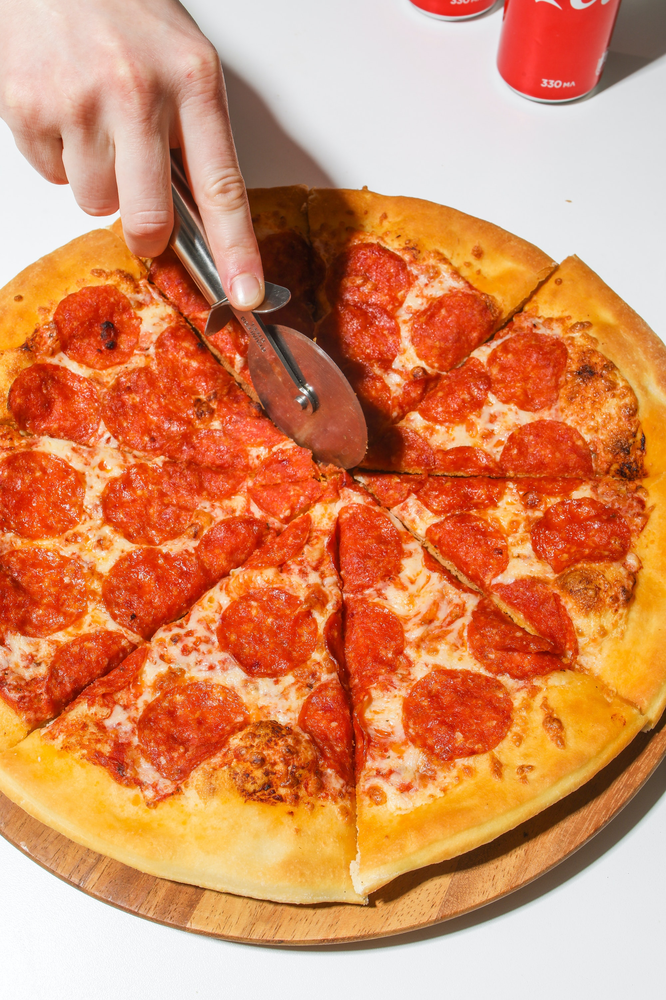

Pepperoni Pizza

Pepperoni Pizza:
Pepperoni pizza is one of the most popular types of pizza in the world. It's a classic pizza that features a crispy
crust, tomato sauce, mozzarella cheese, and thin slices of spicy pepperoni. The pepperoni slices are typically
arranged in a circular pattern on top of the cheese, giving the pizza a distinctive appearance. Pepperoni pizza is a
go-to choice for many people, whether they're ordering delivery or making it at home. It's a simple yet delicious
combination of flavors that appeals to almost everyone. Pepperoni pizza can be enjoyed as a quick snack or as a meal
with a side salad or garlic bread. It's a timeless classic that will continue to be a fan favorite for years to come.
Ingredients:
- Pizza dough (homemade or store-bought)
- Pizza sauce (homemade or store-bought)
- Shredded mozzarella cheese
- Sliced pepperoni
- Olive oil
- Dried oregano
- Red pepper flakes (optional)
- Cornmeal (for dusting)
Steps:
- Preheat your oven to 450°F (232°C).
- Roll out your pizza dough on a floured surface until it's about 12-14 inches in diameter.
- Transfer the dough to a baking sheet or pizza stone that has been lightly dusted with cornmeal to prevent sticking.
- Spread a generous amount of pizza sauce over the pizza dough, leaving a small border around the edges.
- Sprinkle a layer of shredded mozzarella cheese over the pizza sauce.
- Arrange the pepperoni slices on top of the cheese in a circular pattern, covering the entire pizza.
- Drizzle a little bit of olive oil over the pepperoni and cheese.
- Sprinkle some dried oregano and red pepper flakes (if using) over the pizza.
- Bake the pizza in the preheated oven for 12-15 minutes, or until the crust is golden brown and the cheese is melted and bubbly.
- Remove the pizza from the oven and let it cool for a few minutes before slicing and serving.
Return to Homepage